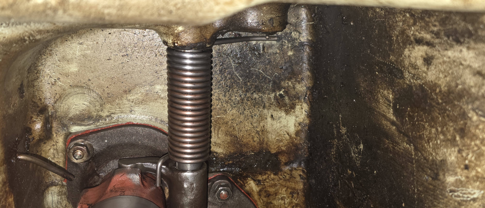
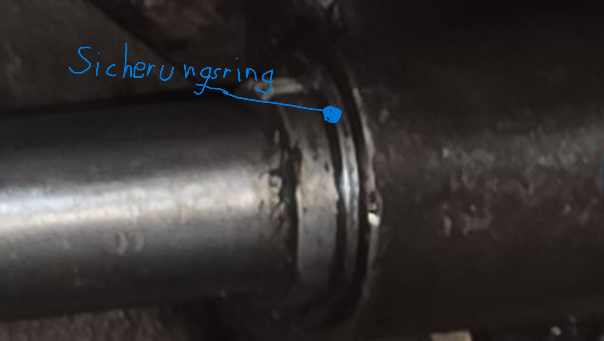

Kupplungsdrückmechanismus
Anleitung & Zusammenbau der Ausrückmechanik im Kupplungsgehäuse

Schritt 1: Vorbereitung & Dichtung
Die Dichtflächen am Gehäuse gründlich säubern. Das Lagerschild (1) mit Dichtmasse ansetzen und mit den Muttern gleichmäßig über Kreuz festziehen.
Schritt 2: Montage der Ausrückwelle & Feder
Die Kupplungspedalwelle (2) durch die obere Bohrung auf der linken Seite (in Fahrtrichtung) ein bisschen durchschieben. Danach das Ausrückrohr (3) auch auf die Kupplungswelle (8) aufschieben.
Schritt 3: Fixierung der Ausrückgabel
Die Rückholfeder (5) muss richtig auf die Kupplungspedalwelle (2) aufgeschoben werden. Dabei den langen Teil der Feder nach unten richten, da er gegen das Gehäuse drückt. Das kurze Ende der Feder (5) muss anschließend nach vorne gespannt werden, sodass die Feder (5) gegen die Ausrückgabel (4) drückt. Hierfür die Feder (5) richtig aufschieben und anschließend die Ausrückgabel (4) nachschieben (da die Ausrückgabel und Kupplungspedalwelle über eine Stirnverzahnung miteinander verbunden sind, ist es sinnvoll, die zwei Teile vor dem Montieren zusammenzuschieben und eine Markierung zu machen, um sie anschließend reibungslos aufeinander schieben zu können). Die Fixierschraube (9) am besten als Letztes einbauen, da sie sonst stört. Anschließend die Feder (5) vorspannen (Schraubendreher für mehr Hebelkraft nutzen) und danach die Ausrückgabel (4) nachschieben. Achtung!!! Vor dem Durchschieben der ganzen Kupplungspedalwelle den Sicherungsring aufschieben und danach die Welle in den 2ten Lagersitz einschieben.


Schritt 4: Schmierung & Kontrolle
Die Schmierleitung (7) anschließen bzw. alle Gleitstellen ausreichend fetten. Prüfe durch manuelles Betätigen der Welle (2), ob sich der gesamte Mechanismus ohne Klemmen sauber vor- und zurückbewegt.